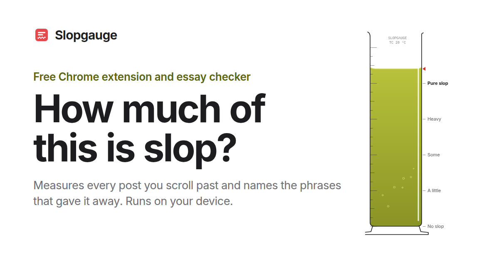

Press kit
Everything you need to write about Slopgauge. For interviews, data or anything else, email support@slopgauge.com.
In one sentence
Slopgauge is a free Chrome extension that measures how much of every post in your feed reads as AI-generated “slop”, names the phrases that gave it away, and does it all on your own device.
About
Slopgauge puts a five-level meter, from No slop to Pure slop, under posts on LinkedIn, X, Reddit, Facebook, Instagram, Threads, Bluesky, YouTube comments, Gmail, Google Docs and more. Hover the meter to see each tell: about thirty named habits of generated text, like “It’s not X, it’s Y” contrasts, stock openers and engagement bait, weighed by a model trained on about 120,000 texts by people and by AI. An optional Deep check runs a larger neural detector on the user’s own computer.
Its free essay checker, at slopgauge.com, marks every sentence of an essay that reads as AI-written, reports how often writing by people scores that high, compares an essay with a student’s own earlier writing, and checks a whole class at once, again without uploading anything. Slopgauge is an independent project by a student at Princeton University.
Facts
| Launched | 2026 |
|---|---|
| Price | Free. Pro for teachers is $39 a year; a school license is $299 a year. |
| Privacy | Analysis runs on the user’s device. No servers receive text, no accounts, no analytics. |
| Accuracy | On 2,999 essays by students in grades 6 to 12, the essay checker called 1 in 100 “Likely AI-written” and caught 72 of 100 essays written by AI on the same prompts. |
| Works in | Chrome, and browsers that install Chrome Web Store extensions, such as Edge and Brave. The essay checker works in any modern browser. |
| Links | Chrome Web Store · slopgauge.com · Field guide to AI tells |
Images



Screenshots of the extension in a feed are on the Chrome Web Store listing. Free to use in coverage of Slopgauge.